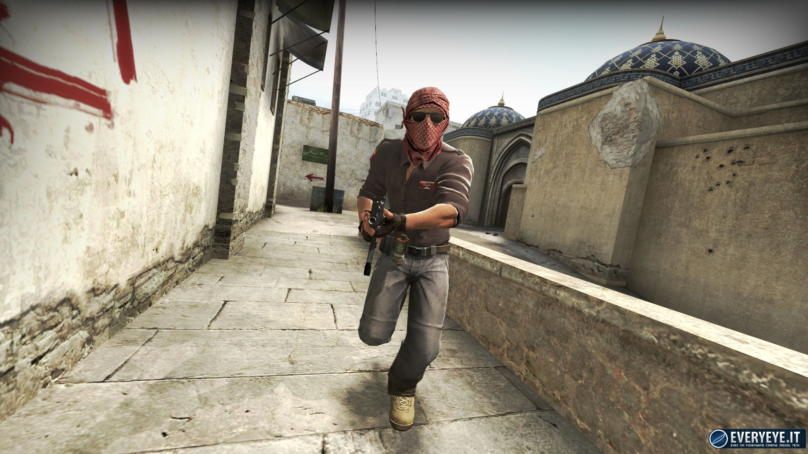
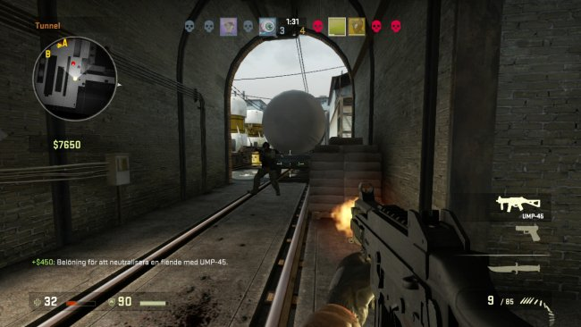

How to Play
CS:GO has 5 different game modes.
- Classic Casual and Classic Competitive: Classical game modes of Bomb defusal and Hostage rescue. Casual and Competitive have different rules to better suit casual players and competitive players.
- Bomb Defusal: The Terrorists must plant a C4 at a bombsite and the Counter-Terrorists must defend the bombsite.
- Hostage Rescue: The Counter-Terrorists must rescue the hostages and the Terrorists must defend the hostages.
- Demolition: Fast paced bomb defusal with weapon progression elements.
- Arms Race: Respawning deathmatch where players must progress through a list of weapons. When you get through all the weapons, you win.
- Deathmatch (PC Only): Team-based respawning deathmatch.
